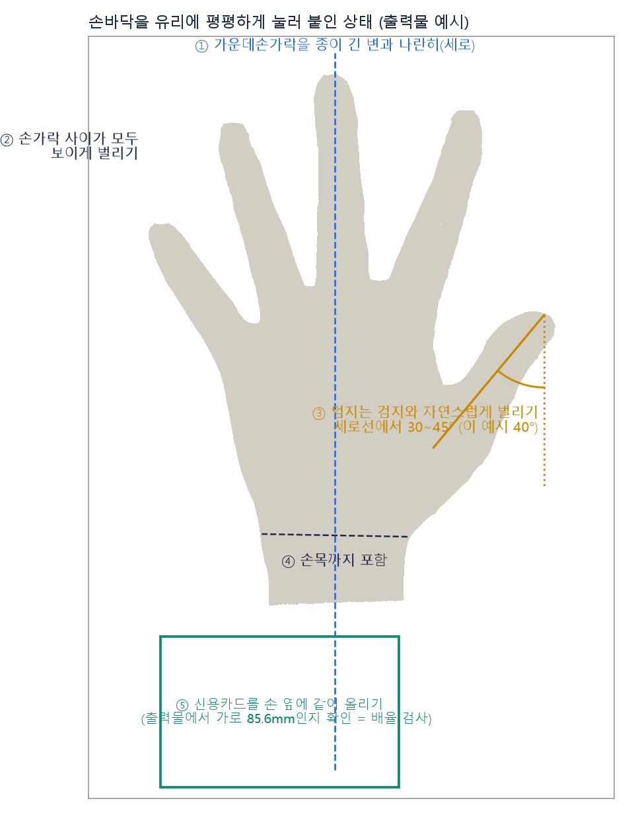
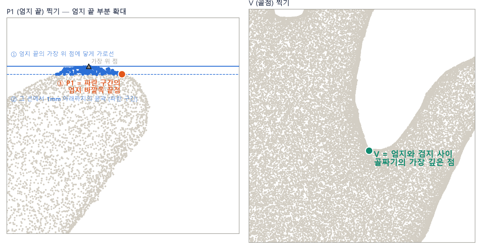
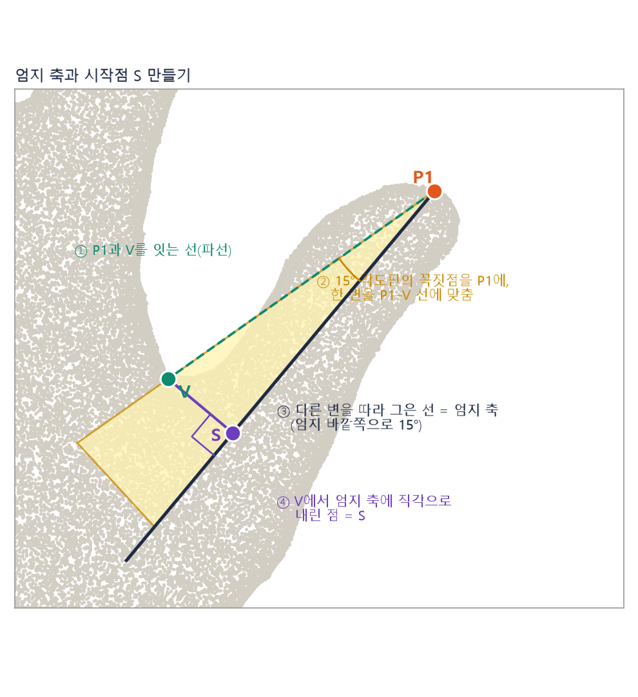
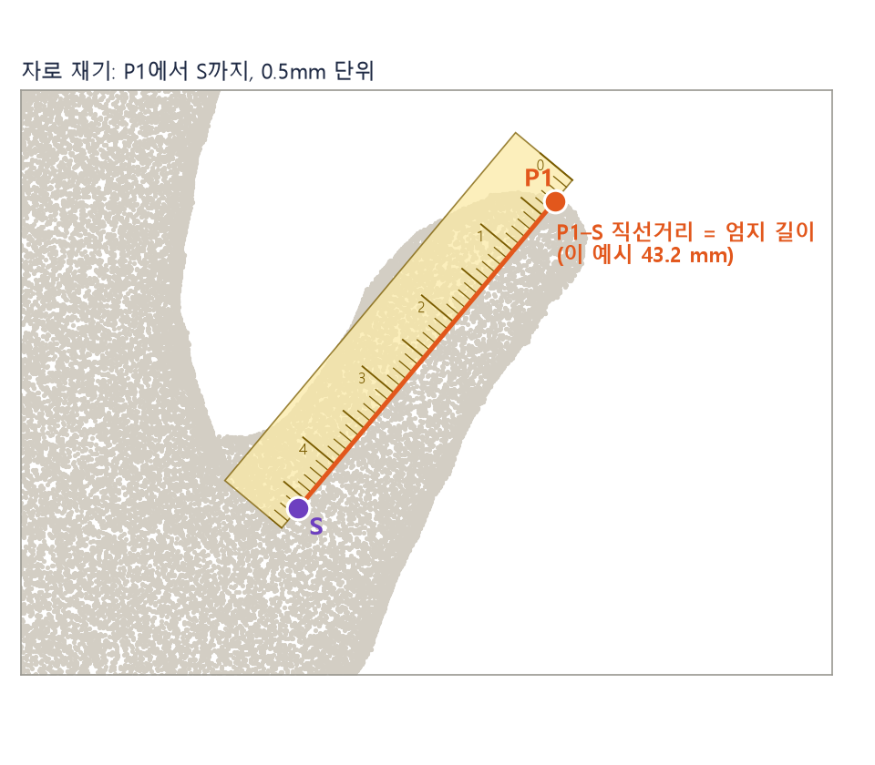
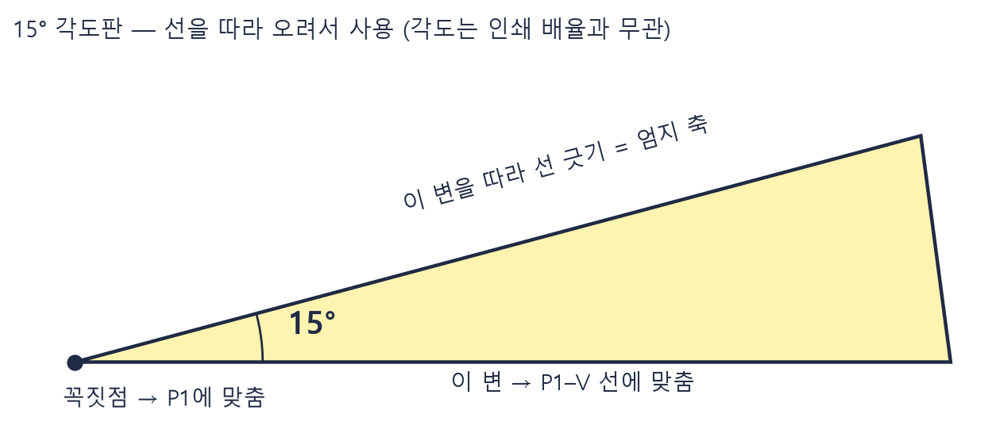

남성
43.62 ~ 57.58 mm
복사기·스캐너로 손바닥을 찍고, 자·볼펜·각도판으로 직접 재는 방법입니다. 연구팀이 3D 스캔에서 쓰는 측정 규칙을 종이 위에서 그대로 따라 합니다.
측정값
P1 엄지 끝 → S 엄지 시작점 직선거리 (mm)
순서
① 손바닥 찍기 → ② P1·V 찍기 → ③ 엄지 축과 S 만들기 → ④ 길이 재고 확인하기
이 방법의 정확도는 연구팀 3D 측정 대비 약 ±2~3mm입니다. 참여 가능 범위의 경계 근처(±3mm)는 연구팀이 다시 확인합니다.

가운데손가락은 세로로 곧게
유리 긴 변과 나란히. 이 방향이 "위"입니다.
손가락은 서로 떨어지게
손가락 사이 골이 모두 보이도록 벌립니다.
엄지는 검지와 자연스럽게 벌리기
세로선에서 30~45° 정도. 검지에 붙이거나 억지로 최대한 벌리지 않습니다.
손바닥과 엄지두덩을 유리에 눌러 붙이기
엄지는 곧게 펴서 옆으로 눕힙니다. 손목까지 포함합니다.
신용카드를 손 옆에 같이 올리기
출력물에서 카드 가로 길이를 재어 배율을 확인합니다(4단계).
주사용 손을 배율 100%로 출력하세요.
복사기는 100%, 스캐너는 "실제 크기"로 인쇄("페이지에 맞춤" 해제). 스마트폰 사진은 쓸 수 없어요. 반지·시계는 빼고, 소매는 손목 위로 올립니다.

엄지 끝 윤곽의 가장 위 점에 닿도록 가로선을 긋습니다(종이 짧은 변과 나란히, 삼각자 사용).
그 가로선에서 1mm 아래에 평행선을 하나 더 긋습니다. 두 선 사이에 들어오는 윤곽 구간을 봅니다.
그 구간의 엄지 바깥쪽 끝점(검지 반대쪽 끝)이 P1입니다.
엄지와 검지 사이 골짜기에서 가장 깊은 점(손목 쪽으로 가장 들어간 윤곽점)을 찍습니다.
골짜기가 둥글어 한 점을 고르기 어려우면 가장 깊어 보이는 구간의 가운데를 찍습니다. 1~2mm 차이는 결과에 거의 영향이 없습니다.

P1과 V를 잇는 선
연하게 긋습니다(기준선).
15° 각도판 대기
각도판의 꼭짓점을 P1에, 한 변을 P1–V 선에 맞춥니다. 각도판이 엄지 바깥쪽(검지 반대쪽)으로 벌어지게 놓습니다.
다른 변을 따라 선 긋기 = 엄지 축
P1에서 손목 쪽으로 6cm 이상 길게 긋습니다.
V에서 엄지 축에 직각 내리기
삼각자를 엄지 축에 대고 V를 지나는 직각선을 그어, 축과 만나는 점이 S입니다.
왜 15°인가요? 연구팀의 3D 측정 규칙에서 엄지 축은 "P1–V 선을 엄지 바깥쪽으로 14.6° 돌린 선"입니다(15명 손에서 이 각도가 ±1°로 일정). 종이에서는 15°로 씁니다.
각도판이 없으면 각도기로 P1을 중심으로 15°를 재도 됩니다. 각도는 인쇄 배율과 무관하므로 각도판은 배율이 조금 달라도 괜찮습니다.

범위 경계에서 3mm 이내(예: 남성 43.6~46.6, 54.6~57.6)이면 연구팀이 보내주신 출력물로 다시 재서 확정합니다. 자가 측정으로는 판정하지 않습니다.
연구팀에 보내 주세요
엄지 길이 (두 번 잰 값 모두) · 성별 · 측정한 손 · 카드 가로 측정값 · 점과 선을 표시한 출력물 사진 또는 스캔 파일
구간별 모집 인원이 있어 최종 참여 여부는 연구팀이 안내드립니다.
점선을 따라 오린 뒤, 노란 삼각형의 꼭짓점을 P1에, 아랫변을 P1–V 선에 맞추고, 윗변을 따라 엄지 축을 긋습니다. 각도판은 엄지 바깥쪽(검지 반대쪽)으로 벌어지게 놓습니다.

각도는 인쇄 배율과 무관합니다. 삼각형이 작게 인쇄되어도 각도는 15°입니다. 왼손을 측정하면 각도판을 뒤집어(뒷면이 위로) 사용하면 같은 방향이 됩니다.